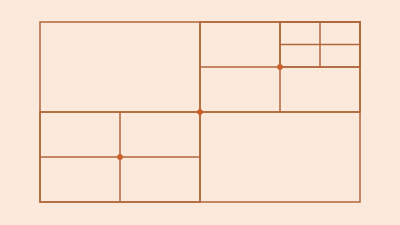
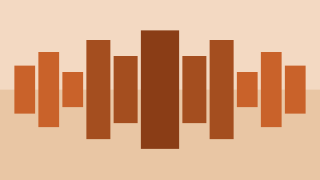
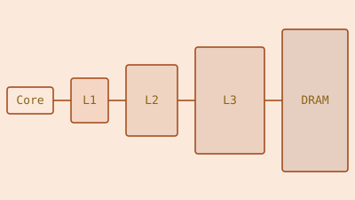
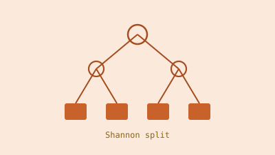
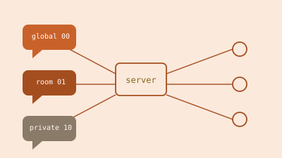
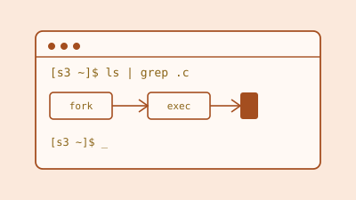
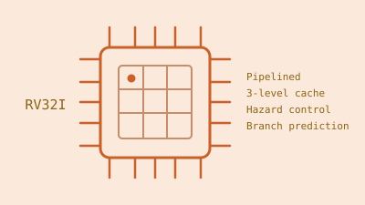

EIE Student @ ICL · FPGA / RTL Engineer
Hi, I'm Lucca.
I'm an Electronic & Information Engineering student @ Imperial College London focused on FPGA design, ML and RTL development, working toward roles in hardware acceleration. I have created this blog to showcase my projects and share my experiences in more detail than a CV allows. You can find my code on GitHub, and reach me via email or LinkedIn.
Featured

PYNQ-Zoom
Real-time FPGA fractal renderer: 48 parallel Mariani-Silver cores on a PYNQ-Z1, 36x faster than the ARM baseline. Built the memory subsystem, BRAM-to-DRAM streaming pipeline, queue system, top-level control, and RTL test suite.

PYNQ-Cast
Multiplayer first-person raycasting engine on a PYNQ-Z1 FPGA with a cloud-hosted, cloud-authoritative game server; built the HDMI output protocol and hardware UI overlay.
All Projects

Customisable Multi-Layer Cache IP
A configurable multi-layer cache IP core for Vivado, parameterised for size, associativity, and layer count. Inspired by my recent work on caches in a RISC-V CPU.

L-LUT to P-LUT Synthesis
A Python and SystemVerilog toolflow decomposing large lookup tables into FPGA-ready 6-input LUT networks, with SystemVerilog netlist and testbench generation.
PYNQ-Zoom
Real-time FPGA fractal renderer: 48 parallel Mariani-Silver cores on a PYNQ-Z1, 36x faster than the ARM baseline. Built the memory subsystem, BRAM-to-DRAM streaming pipeline, queue system, top-level control, and RTL test suite.
PYNQ-Cast
Multiplayer first-person raycasting engine on a PYNQ-Z1 FPGA with a cloud-hosted, cloud-authoritative game server; built the HDMI output protocol and hardware UI overlay.

Multithreaded Chat
A multithreaded client-server chat system in C over UDP, with GTK and command-line clients, chat rooms, and message history replay. Built as a duo project.

Unix Shell
A functional Unix shell in C implementing pipelines, redirection, subshells, and history expansion. Built as a duo project.

RISC-V CPU
A pipelined RISC-V RV32I processor in SystemVerilog with a multi-level cache hierarchy. Built the fetch stage, memory subsystem, cache/MMU, and verification. Built by a four-person team.